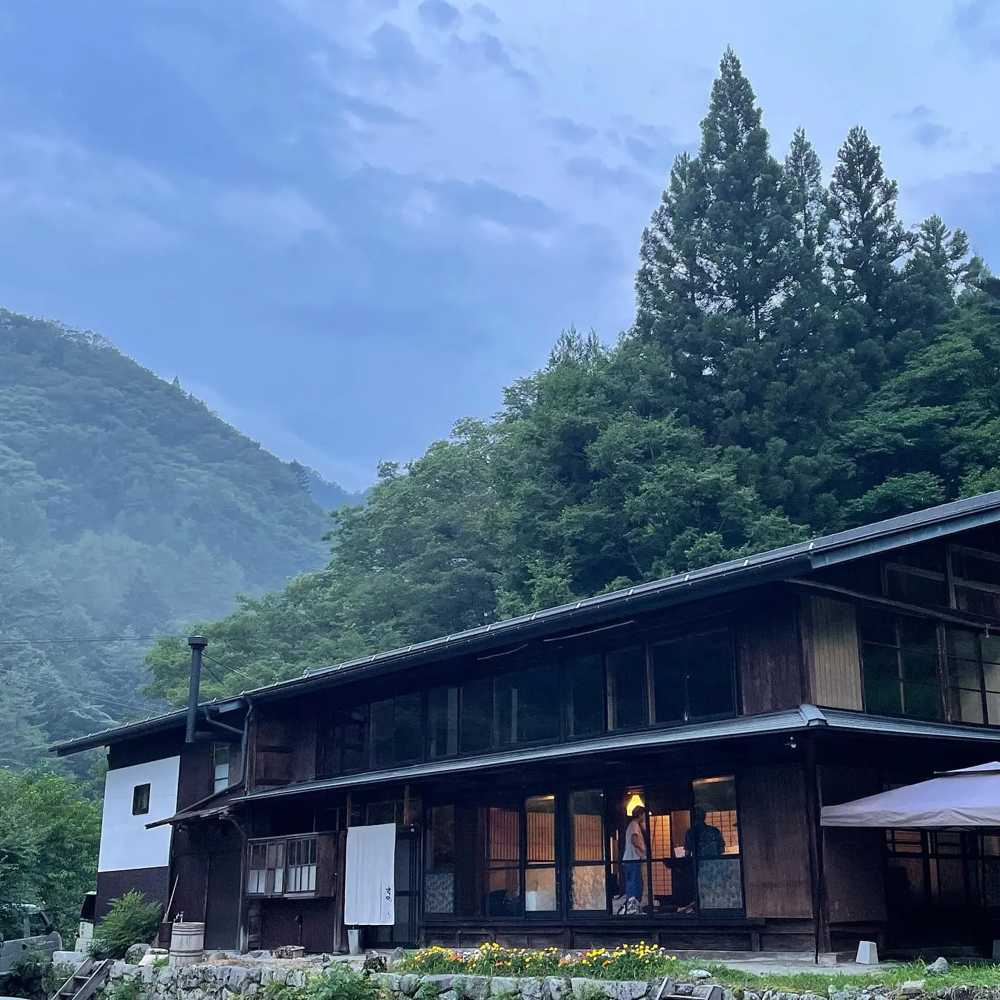
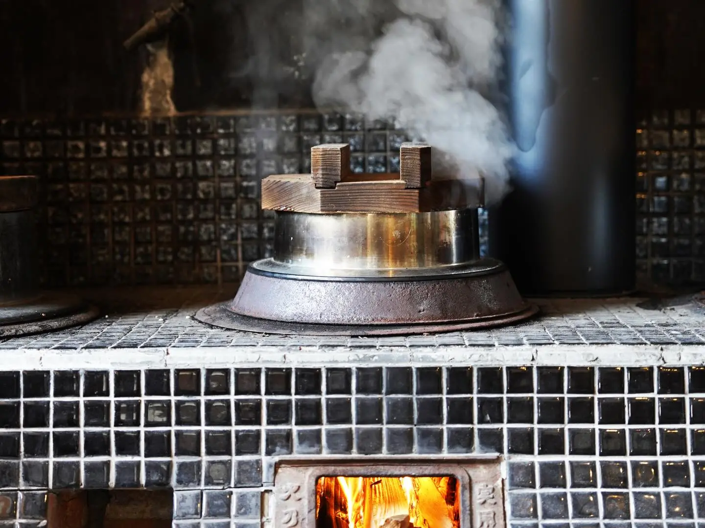
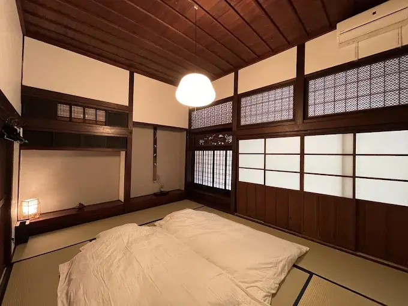
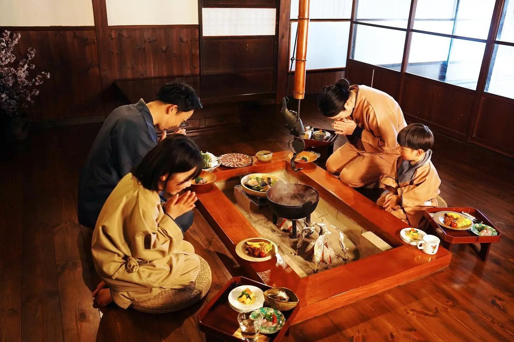
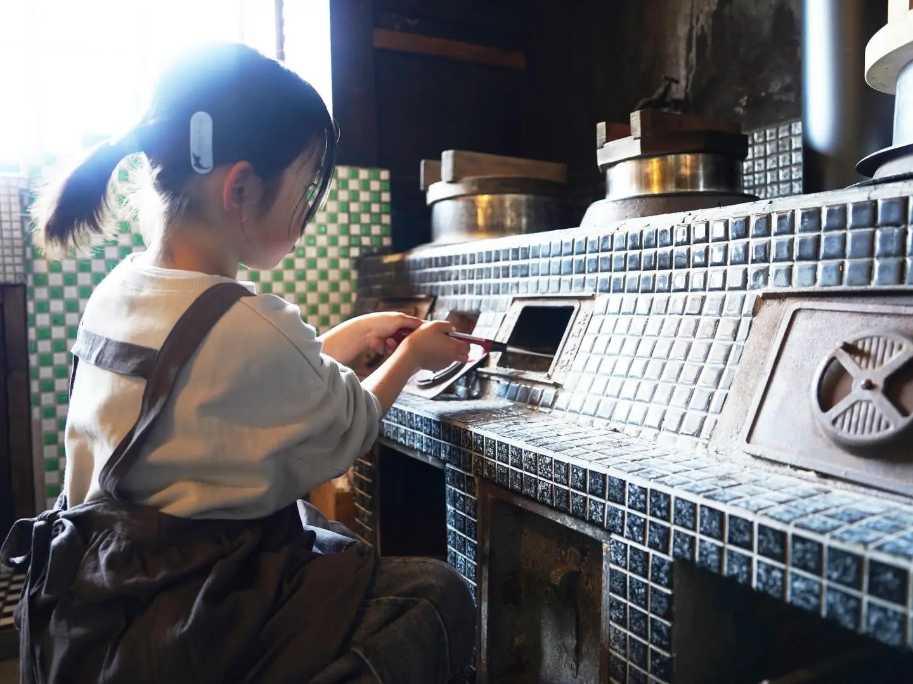
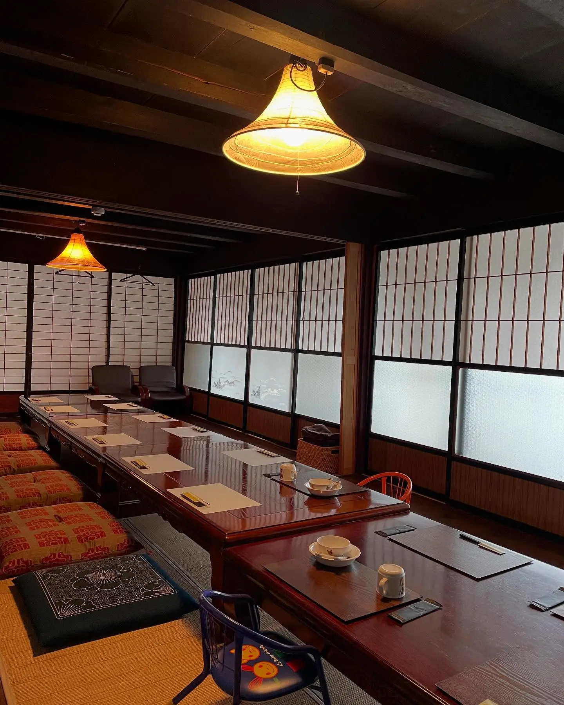
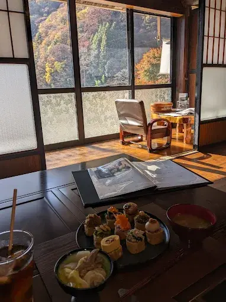
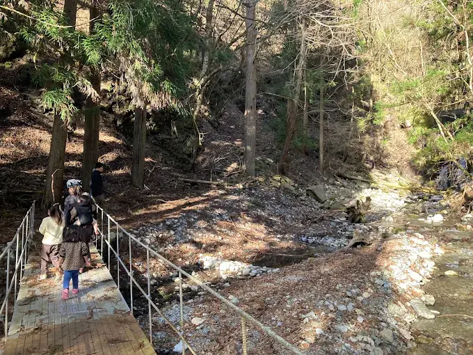

The building is approximately 190 years old. It is a single-storey wooden farmhouse on a quiet road in Kamimura — the upper village district of Iida City, in the valley tucked against the Southern Alps where the mountains of the Toyama-go area hold the Shimotsuki Matsuri, the ancient winter festival that Hayao Miyazaki has confirmed as the direct origin of Spirited Away's central idea. For forty years the house stood empty. Then a chef named Koike Kiyoshi and his wife Masami — who had arrived in this area as a community revitalization worker from Kagoshima — received it as a gift, spent a year and a half restoring it with their own hands and with the help of local carpenters, and opened it as a guesthouse in November 2022.
Magokoro takes one group per day. One family, one couple, one set of friends: the entire house is theirs from check-in until checkout, with no other guests, no shared public areas with strangers, no lobby crowd. The name means "sincerity" or "wholehearted" — まごころ — and it describes the operating philosophy precisely. A professional chef cooks for you at the irori hearth, visible from your seat in an open kitchen arrangement while the fire burns between you. The low beams above are black with generations of smoke. The sliding glass doors are original Showa-era frosted glass, the pattern of which is no longer manufactured. Outside, the mountains rise immediately. Advance reservation is required; the guesthouse does not accept walk-ins under any circumstances.
The Building: 190 Years, Restored by Hand

The farmhouse is approximately 140 square meters of single-storey wood construction, built sometime in the early nineteenth century and estimated at 190 years old by the Rakuten Travel listing and the local press when the property opened. It had been empty for about forty years before Koike Kiyoshi and Masami received it in 2021. The structural work the building required was significant: water plumbing was absent, the toilet was a traditional pit-style, and various columns needed reinforcement. What the owners chose to restore versus replace reflects a specific philosophy: the original frosted glass doors with their Showa-era patterning were kept because the pattern is no longer made; the old tile-floored kitchen was repaired rather than replaced because experiencing the actual cooking space of the period was considered more valuable than a modern substitute; the irori hearth was rebuilt slightly larger than the original but retains the same placement and function; the smoke-darkened ceiling beams were left exactly as found, because the generations of cooking smoke that produced their color are part of what the building is.
The renovation took a year and a half, with Koike doing as much as possible himself and the local community of Kamimura providing assistance. The newspaper Chunichi Shimbun reported the opening in October 2022, noting that the couple's ambition was for the place to become a gathering point for both local residents and visitors from outside the area — somewhere people could return to and feel, as the guesthouse itself puts it, like saying "ただいま" — "I'm home."
The Irori Dinner: A Chef at the Open Hearth

Chef Koike Kiyoshi has spent his entire working life in Japanese cuisine. He trained after culinary school in a Japanese restaurant in Nagoya, then returned to Minami-Shinshu to cook at the Hirugami hot spring resort, then served as Japanese cuisine head chef at the Silk Hotel in Iida, then as head chef at Kyosen in Tenryukyo. Before opening Magokoro, he oversaw culinary direction at Hotel Amanogawa — the stargazing hotel on Shirabiso Highlands featured elsewhere in our Southern Alps coverage. The résumé is not listed here to impress; it explains why the food at a small guesthouse in a remote mountain valley is the quality it is.
The irori dinner is served around the open hearth with the kitchen visible — an arrangement the guesthouse describes as オープンキッチン, open kitchen, so that guests can watch the chef at work. The menu centers on the South Nagano gastronomy: gibier (wild game — deer and boar from the surrounding mountains), river fish, gohei-mochi (the regional rice cake on a skewer, grilled over the irori coals), and mountain vegetables from the Kamimura area. The menu changes with the season; the gibier changes with what has been obtained from local hunters. An alternative is available for guests who prefer not to eat game — contact the guesthouse when booking. The option to take the irori dinner outdoors as a BBQ also exists and can be arranged in advance. Dinner begins at approximately 18:00; the rice used for gohei-mochi is cooked in the kamado, which is part of the pre-dinner experience described below.
The Kamado Experience: Cooking Rice the Way It Was Done Here
At 16:30, before dinner, guests are invited to cook rice in the kamado — the three-hole wood-fired stove that stands in the earthen-floored kitchen, its chimney renewed but otherwise unchanged from the original. The experience takes approximately sixty minutes: splitting wood, starting the fire, managing the heat, and waiting for the steam that tells you the rice is ready. The rice cooked in this way is then used both for dinner and for the gohei-mochi making, which follows: guests pound the fresh-cooked rice with a surikogi pestle until partly crushed, shape it onto skewers, and grill it over the irori with a walnut-miso paste applied. Children can participate in both activities. The kamado experience requires arriving by 17:00; guests who are unable to arrive by that time should notify the guesthouse so the experience can be rescheduled to the following morning.
This sequence — wood fire, clay pot, hand-shaped rice cake, open hearth — is the material culture of the mountains that surround this building. It is also, in its rhythm and its elemental character, something that people who grew up in cities tend to find unexpectedly absorbing. The guesthouse's stated purpose is to let guests experience rural life as a body, not just observe it. The kamado and irori are the mechanisms for that: you cannot be a passive audience member when you are managing a wood fire in a three-hundred-year-old stove.
The Rooms and the Shigaraki Bath
The house has a sitting room with a veranda overlooking the mountain valley — the glass is original Showa frosted patterned glass, each pane casting a soft filtered light that modern glazing does not reproduce — and a bedroom with a particularly notable ceiling. The bedroom ceiling is higher than the rest of the building; the local explanation offered in the guesthouse's own materials is that the room was designed so that weapons used in an attack could not reach the occupant. Whether or not this is historically accurate, the room's height gives it a different quality from the rest of the building, and the carved transoms (欄間) above the doorways, which the previous owners had kept intact, are among the finest preserved original details in the house.
The bathroom is the building's most distinctive interior feature: a large round tub in Shigaraki-yaki ceramic ware — the ancient kiln tradition from Shiga Prefecture, one of Japan's Six Ancient Kilns — commissioned from a local carpenter who built the cedar bath cover that accompanies it. Shigaraki ceramic retains heat exceptionally well, and the tub is large enough for two adults to bathe comfortably. The cedar lid, fragrant with hinoki-adjacent wood oils, adds a further sensory layer to the space. It is not an onsen; it is a ceramic bath in an old farmhouse in the mountains, which is something slightly different and not worse.
The Niijima Shokudo: The Restaurant Arm
The same building operates as Niijima Shokudo (新島食堂 — "New Island Dining") for lunch and dinner service on non-accommodation days, fully reservation-only. The restaurant offers two menus depending on the visit type: the irori meal (囲炉裏料理) centered on gibier, grilled river fish and gohei-mochi served at the open hearth, or the full kaiseki-style course menu (コース料理) with successive dishes that include appetizer, sashimi, grilled items, fried items, and seasonal ingredients from the Minami-Shinshu region. Lunch runs 11:00–14:00; dinner 17:00–21:00. All visits, whether for accommodation or restaurant use, require advance reservation — the guesthouse's Instagram bio states this explicitly: 完全予約制, "fully reservation required."
Practical Information
- Check-in: 15:00–18:00 Check-out: 10:00
- Capacity: One group per day — entire house exclusively yours · Up to 5 guests (5 futon sets provided)
- Meals: Dinner and breakfast included · From ¥39,000/person · Irori gibier meal around the open hearth
- Kamado experience: Rice cooking + gohei-mochi making · ~90 min total · Check in by 17:00 · Available next morning if late arrival
- Reservation: Advance reservation required — no walk-ins accepted · Via website form: www.magokoro2022kami.com · Tel: 070-9036-8930
- By car from Iida IC: ~45 min · Recommended mode of transport
- By bus from Iida Station: ~45 min to Niijima bus stop, then 5 min walk · From Shinjuku ~3h 25min by highway bus to Iida Station
- Shimotsuki Matsuri: December, in the Toyama-go valley nearby · The festival that directly inspired Spirited Away
- Best season: Year-round · December for Shimotsuki Matsuri · Spring for mountain vegetables and bamboo shoot picking · Autumn for foliage and persimmon drying
Getting There: A Valley That Requires Intention
Iida City is the practical gateway. From Tokyo, the highway bus from Shinjuku Bus Terminal reaches Iida in approximately 3 hours 25 minutes; from Nagoya, approximately 1 hour 30 minutes. Iida Station is also served by the JR Iida Line from Nagoya and from the Chuo Line connection at Okaya, though bus service is generally more convenient from the major cities. From Iida Station, the Niijima bus stop in Kamimura is approximately 45 minutes, followed by a 5-minute walk to the guesthouse. By car from Iida IC on the Chuo Expressway, the drive takes approximately 45 minutes on the valley road that follows the Enmata River south toward the Southern Alps.
The road into the Toyama-go valley is not steep or technically demanding in the way that Shirabiso Highlands requires, but it is narrow in places and passes through mountain forest that becomes very dark after sunset. Arriving before dark is strongly recommended, both because the drive is easier and because the guesthouse's check-in window closes at 18:00 — earlier if the kamado experience is requested.
Why One Group Changes Everything
The one-group-per-day format is not a luxury designation. It is a consequence of the building's scale and character, and of the kind of experience the owners are trying to create. When one family or one group has an entire 190-year-old farmhouse to themselves — the kitchen, the veranda, the irori, the bedroom with its carved transoms and unexpectedly tall ceiling, the Shigaraki ceramic bath with its cedar lid — something happens that does not occur in hotels of any category: the building becomes temporarily yours in a way that produces a specific quality of attention. You notice the weight of the beams. You hear the fire. You sit at the veranda watching the mountain dark come down and understand, without requiring any further explanation, why Miyazaki found what he needed in these valleys. The gods were invited to bathe here once a year. The people who lived in houses like this one prepared for their arrival. The building you are sleeping in is old enough to have been here for some of those ceremonies. The fire in the floor is the same fire.
| Full Name | 食と体験の宿まごころ / 新島食堂 (Magokoro Guesthouse and Restaurant / Niijima Shokudo) |
| Address | 375 Kamimura, Iida City, Nagano Prefecture 399-1403 |
| Phone | 070-9036-8930 |
| Website | www.magokoro2022kami.com |
| Anime Connection | Spirited Away — the Shimotsuki Matsuri festival (Miyazaki-confirmed origin of the film's bathhouse premise) takes place in the Toyama-go valley immediately surrounding Magokoro; Shimoguri no Sato, where Miyazaki stayed personally, is in the same Kamimura district |
| Built | ~190 years old · Renovated and opened 2022 |
| Format | One group per day — entire house exclusively yours · 5 futon sets maximum |
| Price | From ¥39,000/person (dinner + breakfast included) |
| Signature Features | Kamado rice cooking + gohei-mochi experience · Irori open-hearth dinner · Shigaraki ceramic bath · Smoke-blackened original beams · Showa frosted glass doors |
| Reservation | Advance reservation required — no walk-ins · Book via website or telephone |
| Nearest Bus Stop | Niijima (新島) — 5 min walk · ~45 min bus from Iida Station |
Photo Gallery

Photo 1
Photo 2
Photo 3'">
Photo 4'">
Photo 5'">
Photo 6'">One House. One Night. Advance Reservation Required.
Magokoro accepts no walk-ins. Contact the guesthouse directly to reserve your date.
Reserve via Official Website →The Shimotsuki Matsuri is location 09 in our complete Spirited Away pilgrimage guide: Through the Tunnel — Every Real-Life Spirited Away Location in Japan →
Magokoro's chef previously directed the cuisine at Hotel Amanogawa on Shirabiso Highlands — for stargazing above the same mountains, read our article: Hotel Amanogawa: Sleep Under the Sky That Inspired Spirited Away →
← Back to Stay